Week 4 : Assignment
- Cut something on the vinylcutter design, lasercut and
- Document a parametric press-fit construction kit, accounting for the lasercutter kerf , which can be assembled in multiple ways and
In week 4 we are introduced to computer controlled-cutting. In computer controlled-cutting we use computers to do fabrication processes. Instructions are given by codes of line which can be generated by manually
or we can turn the geometries into codes. code which is used in machine for fabrication processes called "G-CODE". Gcode is numerical controlled programming language used in computer-aided
manufacturing to control the automated machines.
example of vinyl cutting - link

Road map of city -laser cutting example - link
In this week I learn:
- Vinyl cutting- how to use Roland vinyl cutter
- Laser cutting- SIL laser cutter
- Rhino with grasshopper
- RD-WORKS laser cutting softwere
- Cut studio For vinyl cutting
vinyl cutting
Exploring Roland GX24
A vinyl cutter is a type of computer-controlled machine. Small vinyl cutters look like a desktop printer. Like a printer controls a nozzle, the computer controls the movement of a sharp blade over the surface of the material. This blade
is used to cut out shapes and letters from sheets of thin self-adhesive plastic (vinyl). The vinyl can then be stuck to a variety of surfaces depending on
the adhesive and type of material.
To cut out a design a vector-based image must be created in a software program (usually Adobe Illustrator or Corel
Draw).
It is then sent to the cutter where it cuts along the vector paths laid out in the design. The cutter is capable of moving the blade on an X and Y axis over
the material, cutting it into any shape we are able to design but there will be always one perfect settings for each design depends on the geometry. Since the vinyl material comes in long rolls, projects with significant length like banners or billboards can be easily cut as well.
to know more about vinyl cutter you can click here
Controller of vinyl cutter
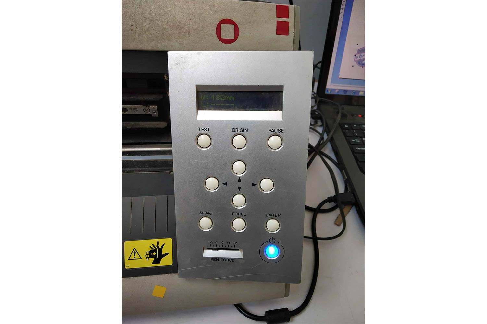
TEST : for testing the material or fixing the parameters like
ORIGIN : To set the origin of the machine
PAUSE : to pause the machine while running
POSITION CONTROLLERS : for positioning material and blade
FORCE : to enter the machine force
PEN FORCE : to give manual force while cutting operations (Increment / decrement)
ENTER : to select the required settings
STEP 1: Doing test cuts
First of all we go for test so we can know the cut abilities of vinyl cutter. I used GSM - 20 material here, In Test cut wwe found out at which speed and force Inner square can be removed from circle smoothly.For test cut i found Force = 150 gf and speed Speed = 20

STEP 2: Change the blade
There was a issue we were finding in cuts they were not smooth as we imagined, so we try another blade and it was quite good
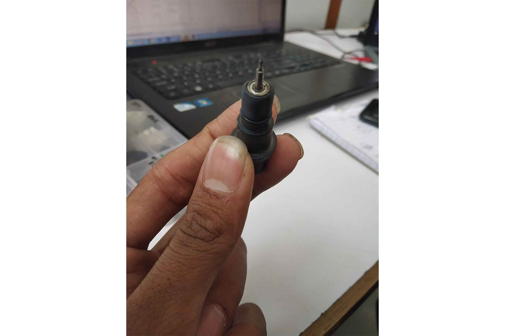Logo making vinyl cutter
I decided to try my Sherrif logo which i made in Week 3 in INKSCAPE softwere. it has good deatils in the fonts i can also able to know what will be my design limitations in logo making ,
download files from here inkscape(.svg) , inkscape(.jpg), inkscape(.eps)

Cut STUDIO softwere
I tried both Vector Raster formats for logo making. i wanted to see advantages of these two formats in machine operations. Cut studio can work on both vector and raster formats. you can import raster images of extensions (.bmp, .jpg, .gif, .tif, .psd) or vector images of (.EPS or .ai).
Raster Image
First ai went for raster image , raster image can be downloaded from above link .. as i say which vector formats you need to upload on the cut studio, Uploading Raster formats is easy you can just import it without any pre Processing.
cut studio interface
This is cut studio interface , it is quit simple and easy to understand , you can import images from file menu here. here in defaul state Origin will be in bottom-left.
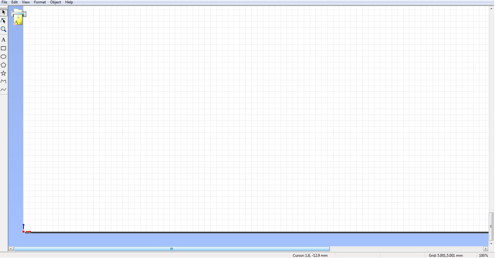Import jpg format
only one limitation in raster formates are we can choose our cut paths directly we have to do some or cant generate all the desired path lines, we need to do some work on that by creating image outline to generate best paths we can. (lets understand this later). After importing jpg image or any raster format (JPG in my case) you can just Right click on image and select Image outline. first disable the image view.
What we are doing here is we are setting different contrast of images to create different path lines , this paths are going to be usd by cutters. in dark part software will target the more dence colors and in light parts it will target bright ones. i have to select in between to generate tool path of image.
Set origin
After setting the outine we have to set the origin of the machine, what we can do here that one can set the cutter ate desired position and set that point as origin by clicking the origin button on the machine , that time origin for machine will be set. but we have to tell the software what is the cutting area.
For setting the cutting area we need to go Cutting > Properties and select GET FROM MACHINE
Changing speed
In Roland GX24 speed is 20 cm/s in default. it is maximum speed of the machine , for my job it was Too high, letters can tear off during the cutting process. so i desided to keep it too 1 cm/s first. force was 150 gf

reducing the force
Antd it was cutting good. Force was too high for cutting the material , so i decided to change it to the 110 gf.
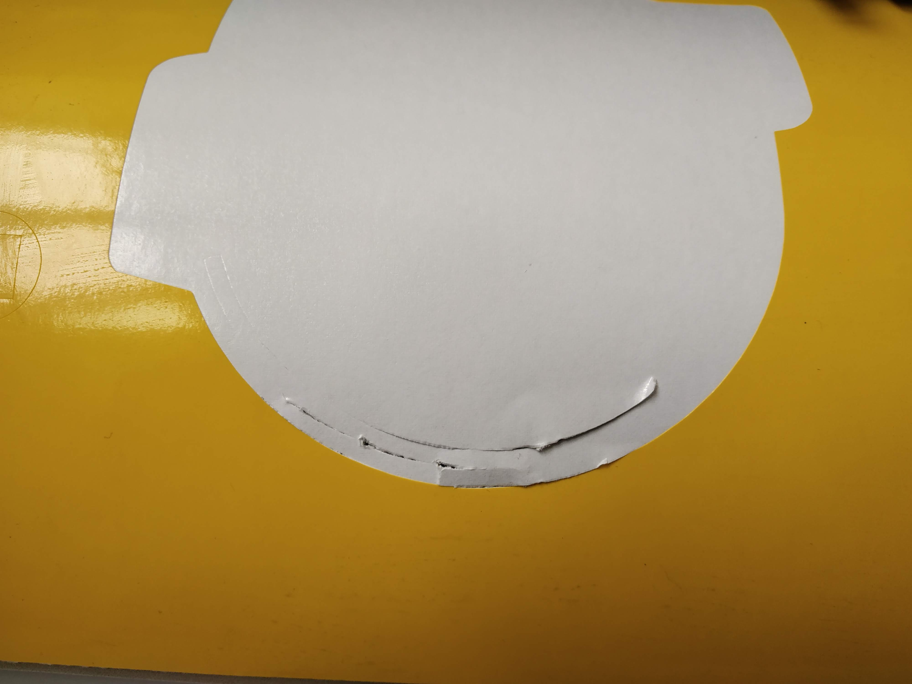
tools to know :
- Image outline- This tool will scan the image and generate outline of image border
- Cutting- Cutting is used to set the origin point(from which machine can start cutting) of machine
Post Processing
After doing vinyl cutting on material, it is time to take logo out of it. It is little sensitive process it needs to be done with proper way otherwise logo will take bad shape and will not be good to put on somewhere(Main objective)
Use of transfer tape
Transfer tap is used to place the logo on the place where you want it to.
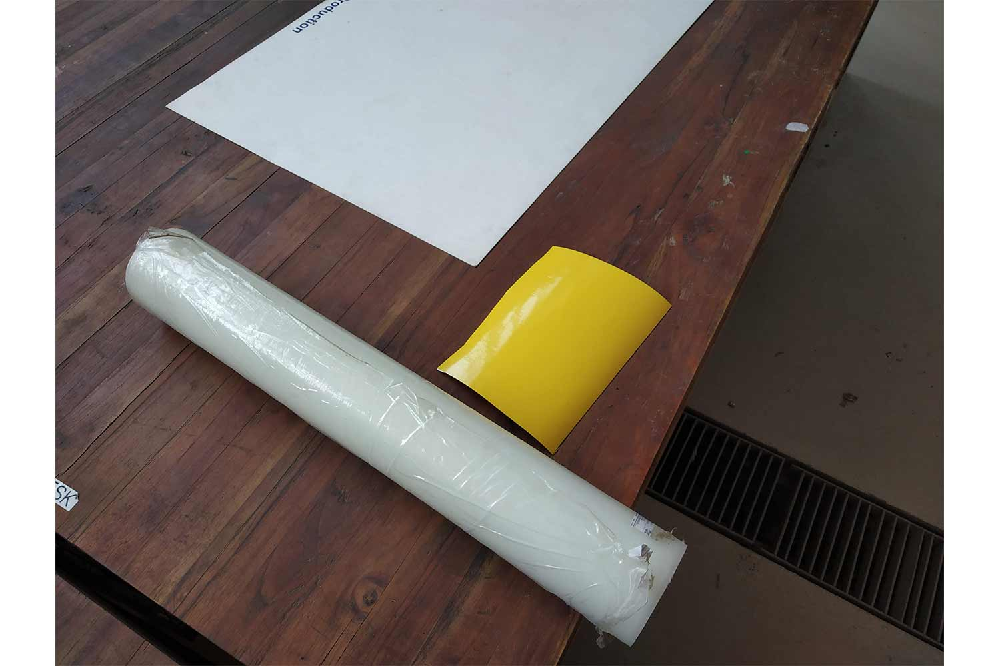Cutting out transfer tap
First I cut the transfer tap i needed from roll and place it on the partsince our small roll of transfer was finished i have to take out bigger one and i cut one portion of it to place transfer tap on cut part

Pulling out unnecessary material
I removed unnecessary material first ! For easy removal one should try to pull transfer tape parallel to the surface , in this case shear will help to remove the material , directly pulling it up may brake the material and it will one have to make logo once again .
 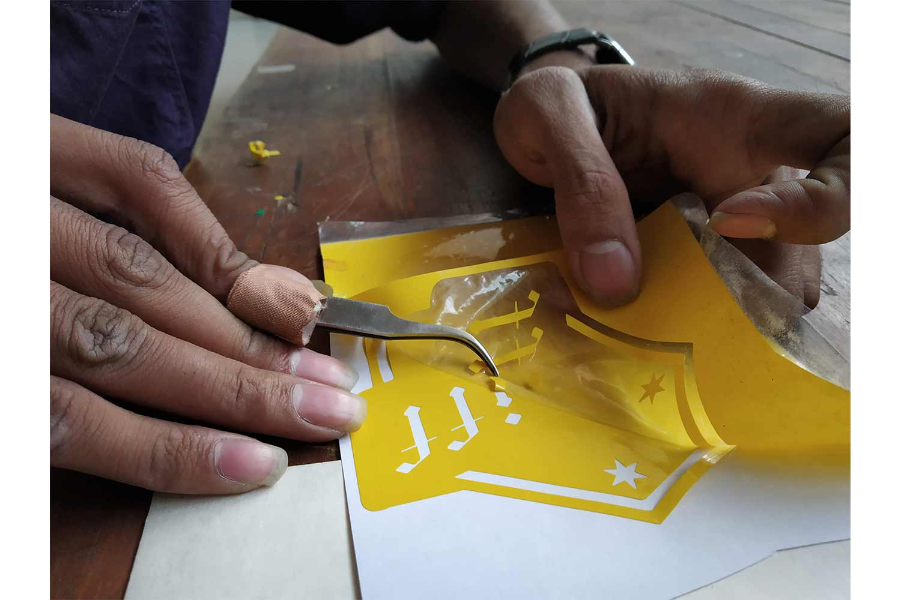
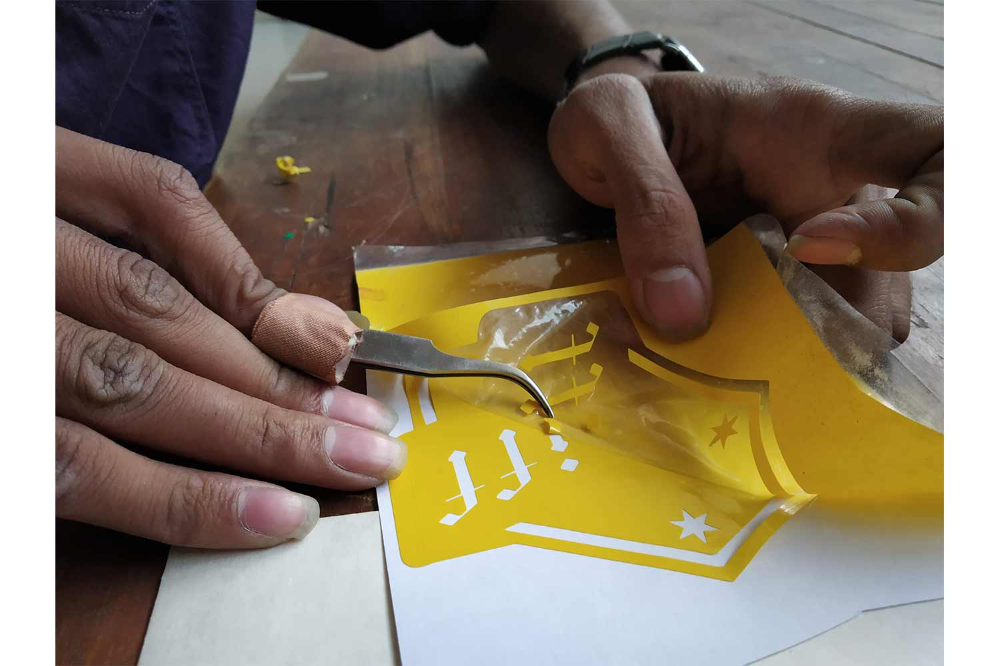
Using transfer tape one more time
then I took out another transfer tap and removed my logo from roll and place it where I wanted to .
What one can do here is put the logo one the roll( its negative side ) if you don't want to stick that on instance and take it out when you need to , it helps when you have more than one logo to place.
In put it on my laptop.

With vector format
Then i did the same process with vector format, i used .eps format for it. The difference between these tipe of format i explained above , but vector formats are cery good when you need perfect cutting paths , it will conver all the vector lines in cut paths , but for that one will need vector formats , so i used .svg format , original file of inkscape. click here to download.
In vector format the cutting process is very simple , you dont have to make contrast changes to generate path , tool path will be there initially , but more complex thing is converting or preparing the image for the Cut studio softwere. the procedure is little complex and need to follow some cirtain ground rules , i will not say method is not general but we need to use that for our cut studion version
.eps format
as i written cut studio can run on .eps and .Ai formats. i tried with .eps format. i used Inkscape and illustrator to generate .eps format.
Convert text into paths
it is good practice to convert text manually on paths. for doing that in inscape go to Path > Dynamic offset and select text.

Inkscape
you cant use export option in inkscape to generate eps format , so go to save as and export the .eps file from there. you will find option to upload in Postscript version, i checked both looked same on eps format. But i recommend you to go for lower version , incase you have old system.
click here to download file.
export from Illustrator
i exported with illustrator , i will show why i have to do it. but understand process. in illustrator one have to export in illustrator 8 EPS(for our cut studio version). click here to download file.
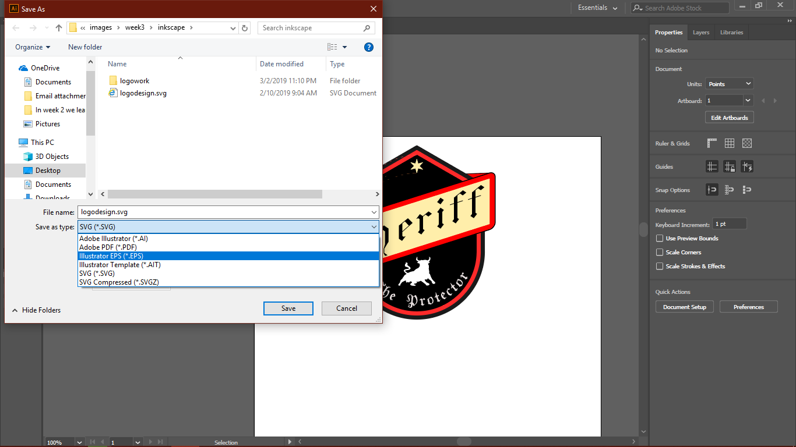
visual comperisson
below image is comperisson of eps file of inkscape and illustrator. both looks same , both have same path lines generated.but the problem is when you import it in cut studio, for inkscape file when you add the file on software it will not show up , but illustrator file works good. thats why i have to chose illustrator for Uploading

imported on cutstudio
As i said toolpath will be generate il=initially and no additional process require to it , but one thing is to be take care of is to remove unwanted paths , sometimes in vector there are soem path line remained while designing. These will mess you logo in cut if you dont elliminate them.


Post processes
post processes are same in vector format as i mention on raster. but one one advantage is that you will may have more option about removing unnecessary material since each vector path is going to cut. below is image of vector cut logo.

comperisson
Here left one is Raster and Vector. i had better options to change font locations in vector. i could direct the toolpath more efficiently , but it is not good if you have more complex logo , i generally observe , if some path is going through design it will cut throuh it and it can lead to bad postion while removing logo and unwanted material.
For high contrast one can go for the raster type , it is also good for complex designs as far as softwere can detect edges properly.

Laser cutting
in Laser cutting we are assigned to make one One press fitting model using the concept of Parametric modeling.
Parametric modeling
Parametric design is a process based on algorithmic thinking that enables the expression of parameters and rules that, together, define, encode and clarify the relationship between design intent and design response.
Parametric design is a paradigm in design where the relationship between elements is used to manipulate and inform the design of complex geometries and structures.
The term parametric originates from mathematics (parametric equation) and refers to the use of certain parameters or variables that can be edited to manipulate or alter the end result of an equation or system.
in conclusion Parametric design helps designer to modify the design very efficiently , in simple words i take one dimention and take it as a main parameter which effects other parameters directly or indirectly , i will try to relate it with other dimentions as a set of equation , which i already have to follow in simple modeling also , this set of equation will help to redesign the model quickly , if i change one parameter, all dimentions related to it will change , in complex design there can be more than one parameter which are main or call it dominant in design.
in Maths dominant parameters can be called Independent parameter and other parameters as Dependent parameters, because their values depend on other parameters.
How it works ?
i prepared some basic model of parametric modeling to understand how i can use it in proper way , i initially used Constrains to have relationd between vertices , these constrains dont follow any expression , they follow simple geometric rules. List is below
Skecth with constrains
Below is simple sketch i prepared and i used constrains like equal, perpendicular, parrallel, horizontal, Symetric. in this design i have to think which parameter i should chose to be dominant , so i have work related to press-fittings. i chose slot thickness as main parameters , because thickness of the material vary and you may have to work on multiple material in press fittings , so here only slot thickness is dominant , and i relat it which othe parameters. see below images to have idea.

Parameters
In Modify menu click parameters to give the dimentions names , this names will represent the dimentions and it will be easy to work with names. Below is the image of my list of parameters , i choose thickness as dominant one and it is related to other one.

Other sketches relation
Here is relation of thickness to other sketches , i used diagoonal because it is able to controll the both sides of the square. no need to give every side relation. here Slot dimention is not used in design , i gave it when i was figuring out whole parametric relation.

relations in sketch
you can put relations directly on sketch plane. see below images, just define your dominant dimention( mine thickness) first , like Thickness = 3.21mm and then give relationms like below.
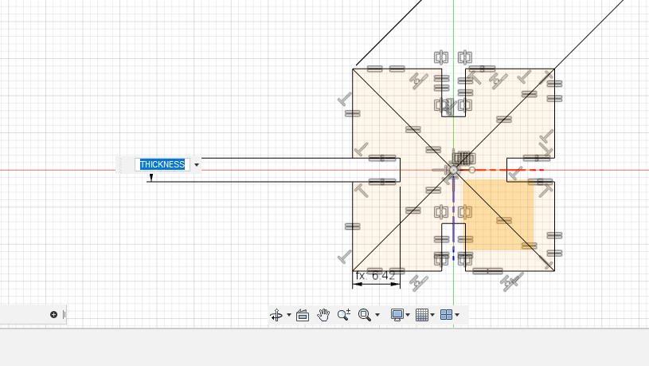 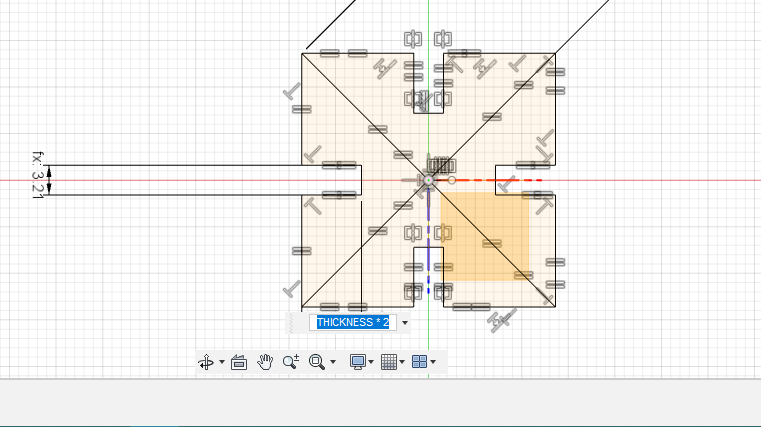 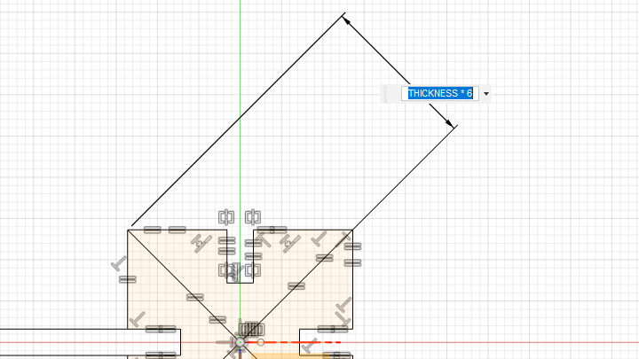feasibility in design chnages
gif shows feasibity in design changes in parametric modeling.
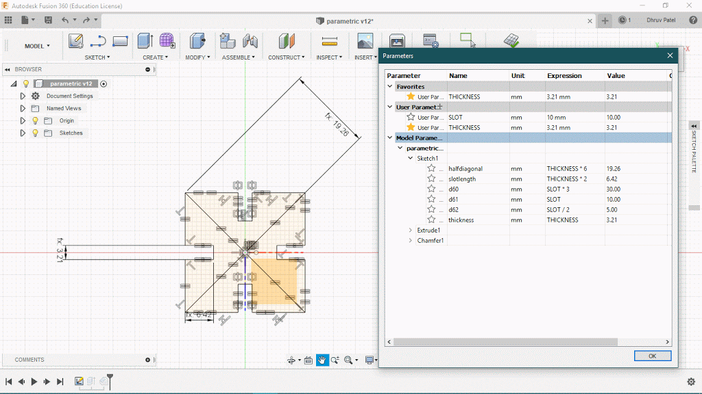trying another shapes
then i tried different shapes. these design are not for pressfitting , only purpose was to understand the process.
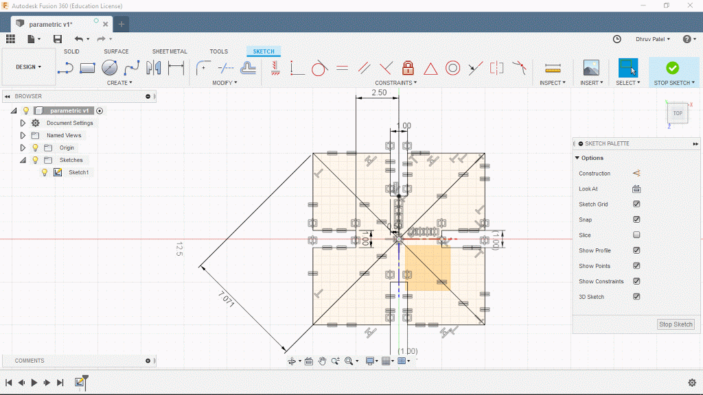Laser cutting format
then i uploaded files for laser cuttinng. InFusion-360, one need to create .dxf file for laser cut. for that Right Click on the sketch of geometry and select save as .dxf format. Our laser cutter(SIL) was working on the RDworks and it demand to have .dxf files of version 2004.
. details about rdworks softwere is included in Rhino section.
In case Fusion-360(.DXF) file is not importing in Rd-works, open it on autocad and export againas version 2004 in DXF.
In AUTODESK
then i opened the autodesk comand to delet the overlay using overkill comand it is needed because if some lines are overlayed laser will cut twice that part and may remove unwanted material there.
OUTPUT
It was my first laser cut and it very pleasing to see this different shapes.
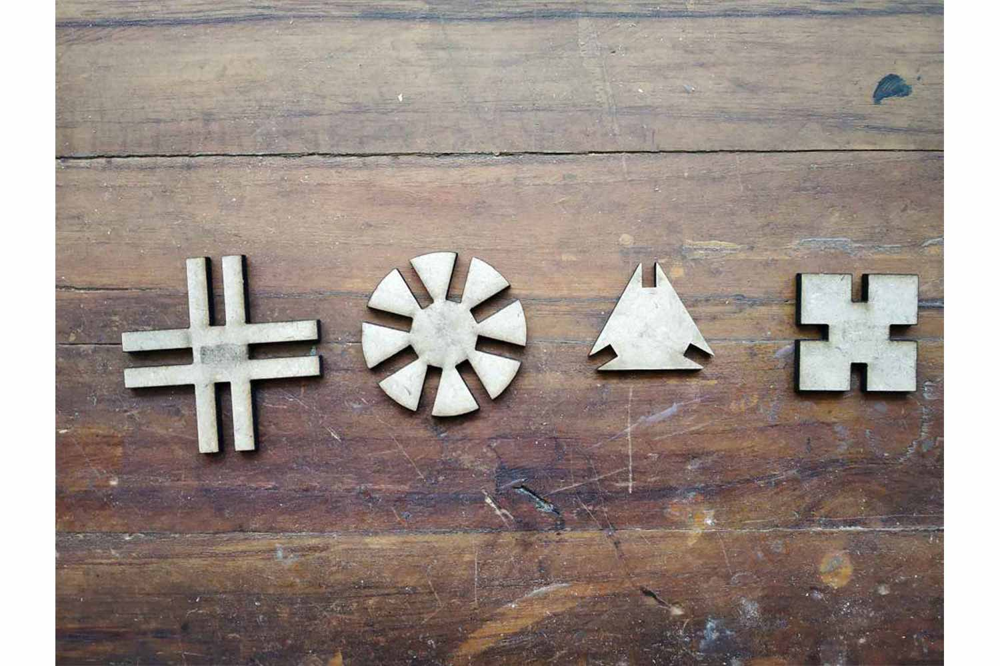 Get file from Here Fusion file(.f3d)
Press fitting
Press fitting is joining of the two parts without any fastners and glue , but only friction will be there. friction will help the modules to be connected. you can know moree about pressfitting in Fab academany-tutorials. they explained whole process of pressfitting.
KERFING
For press fit cutting i have to make one comb for measuring kerfing. kerfing is removal of material by the the laser in process, so it will be always dimension difference in the parts you want to join from the original one. for componset the removal of the Material , one may have to add or substract dimention from original one on cad.to measure kerf of the material
Comb test
To know which dimention is good for the material Comb test is necessary. In comb test original dimention may Increment in some fraction (i.e., make some at w-.002″, w-.001″, w+.001″, w+.002″ etc. w is original dimention) Use kerf value on increment/decrement. and after cutting you can test each slot by fitting in each one. Try to figure out which dimention is good to apply on the design and select it.In my case i was working on the material which thickness is 3.25 mm - MDF
Design of comb wheel
you can see in picture i have given various thickness's the comb slots to find out which one fits better, usually for female slots always less thick then original dimensions, and male slots are thicker than original one.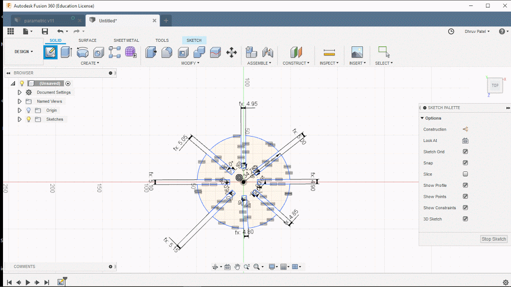
You can download files from here fusion-360
3.25 mm comb test
Since my material thickness is 3.25 mm. i am preparing file accordingly.
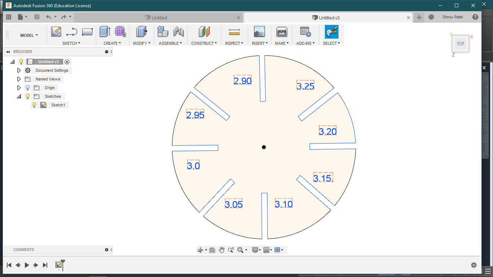Generate DXF file from fusion.
To generate dxf format from the fusion-360 Right click on the sketch and click Save as Dxf format.

modification in autocad
As i mentioned on trials section , directly generated file from fusion-360 may not work, becuase of DXFs version issues. i lost my text i exporting file , so i have to do some modification.

change of text
I changed text to Timesout.shx. one can change fonts on autocad on Annotate > Text style > Font name. you can do post-processes like Join command and overkill command to ensure clean sketch. In my sketch i have to use overkill command because of overlaping lines. Just write Overkill on command and select sketch.
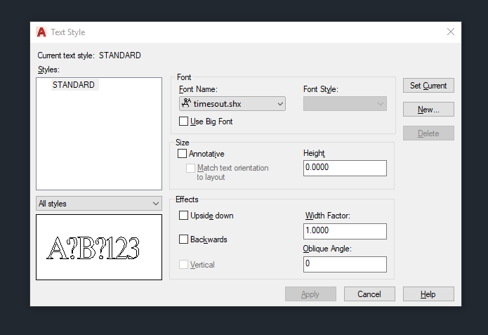 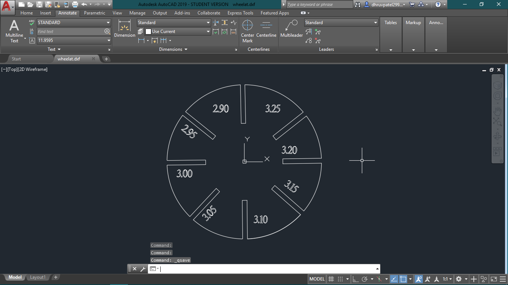IN RD-WORKS
in Rd-Works there are sections for different tasks , listed below 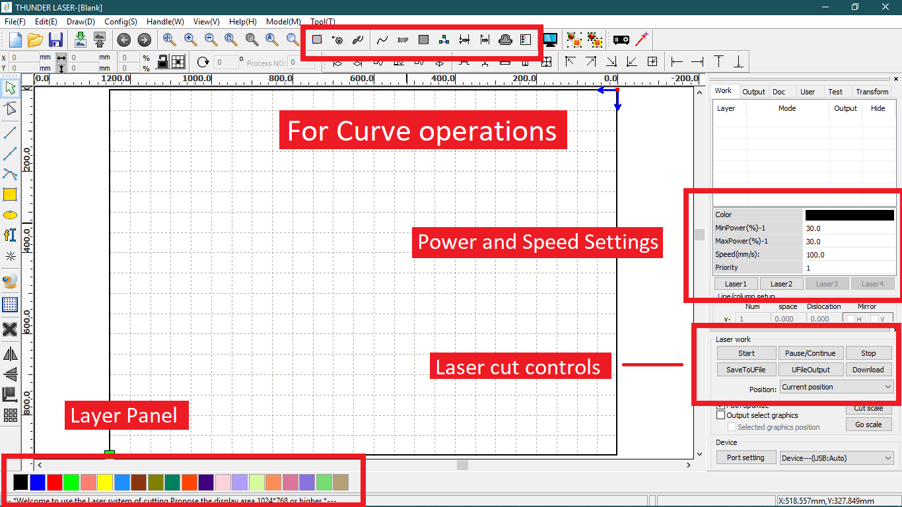
For curve operations
Power and speed settings
Laser cut controlls
comb test

Laser cutting
In laser cutting we have SIL - laser engraver machine. it is co2 based laser engraving machine. since it is co2 based laser engraver it can not cut the metal, but it has good results with the materoials like MDF, plywood, Thin wood sheets, buff board, cement board, Acrylic. these are the MATERIALs i tried with machine i placed details on group work.
OUTPUT FOR 3.25 MM MDF
On comb test i found , thickness of the 3.10 will be perfect for my presssfitting kit. So my material kerf was 0.07 (One side of notch)


RHINO AND grasshopper
during trials i found some problems with the Fusion-360. Softwere was taking to much load time when i was changing Parameters, it was beyond my machine's limitations so i go for Rhino and grasshopper.i was familier with rhino but i have no idea how to use it for parametric design , through it was for parametric designs i was sure i can use it for good. i saw last year fab academy student Adhitya-ss documentation for any clue in parametric softweres.and i found solution. this vedio is teaching to creat Notches on geometry. i followed the whole process. <
MAKING MODULES(SHAPES)
I was taking time to understand the Workflow of the grasshopper, since it was very new to me but i figure it out some how and started making processes

MAKING MULTIPLE MODULES
i am still figuring out workflow of the grasshopper , and i tried different module myself later. 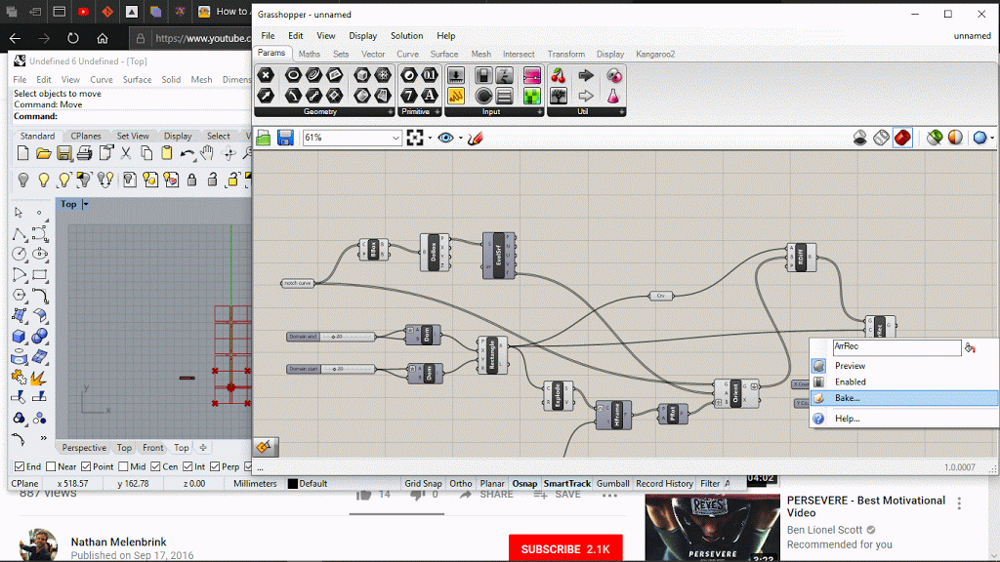
export File from rhino3d
Select Export selected option and select geometry, select Autocad(.DXF) format. then go to Options and select natural 2007 version.
These methods are essential for our system. You can do some post process on autocad also.
 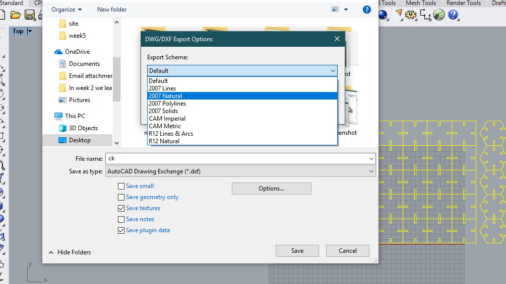
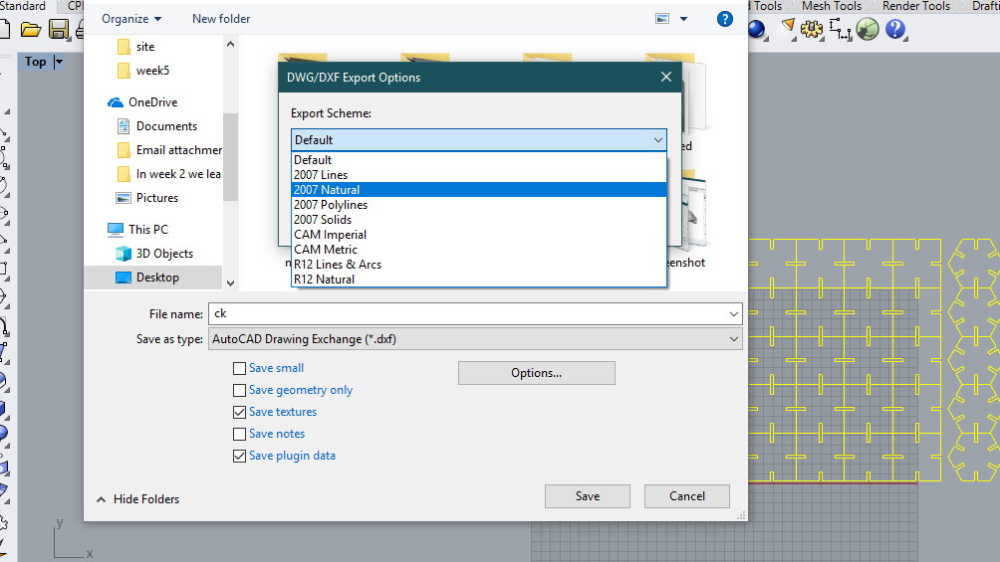
dxf file
if you do some work on autocad , like overkilling and joinning better if autocad file is exported on 2004 version. Converting files into .DXF, it is the format that RD-WORKS can read. for our system it is recommended to use .DXF 2004 version
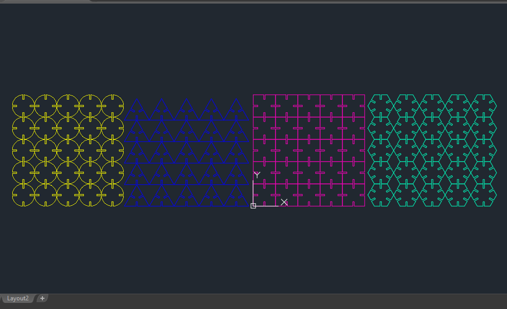Dominant parameters
Talking about the dominant parameters in the design , there are two main two parameters which are dominant.RDworks softwere


Laser cutting
final parametric design
First construction
 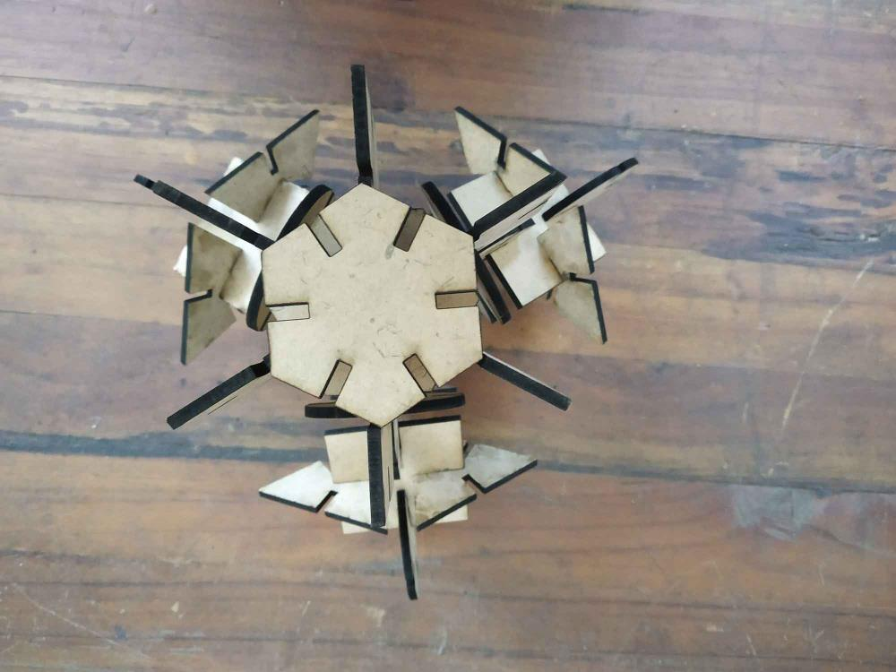
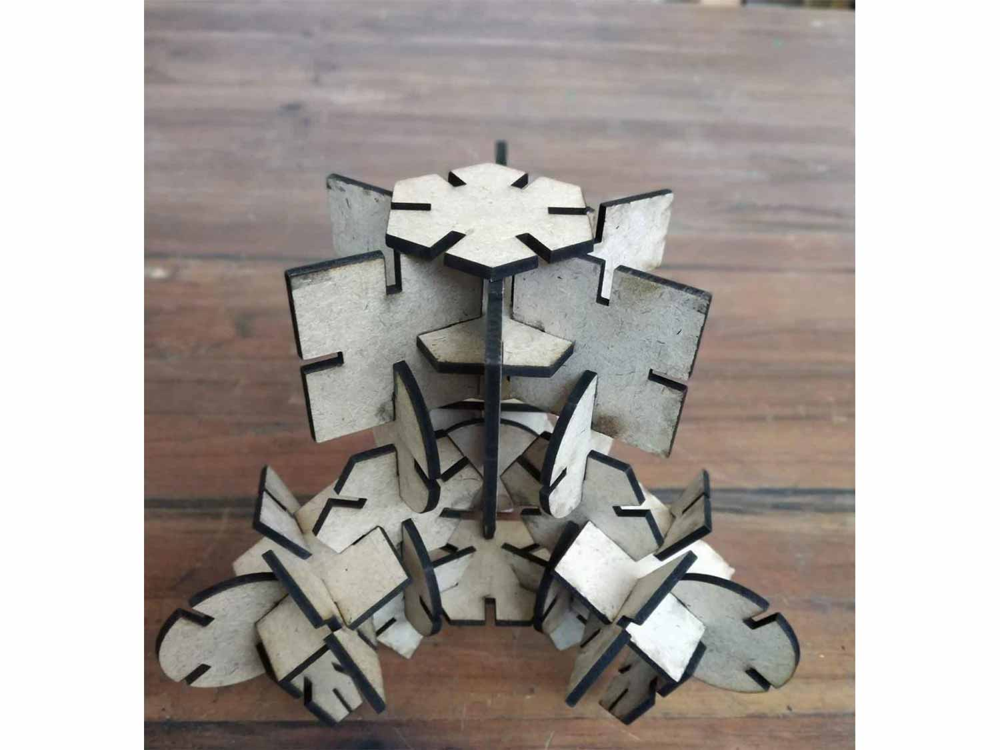
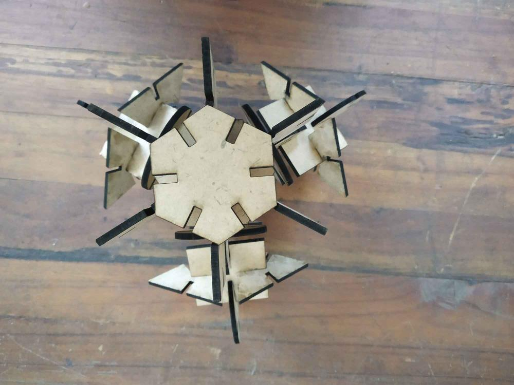
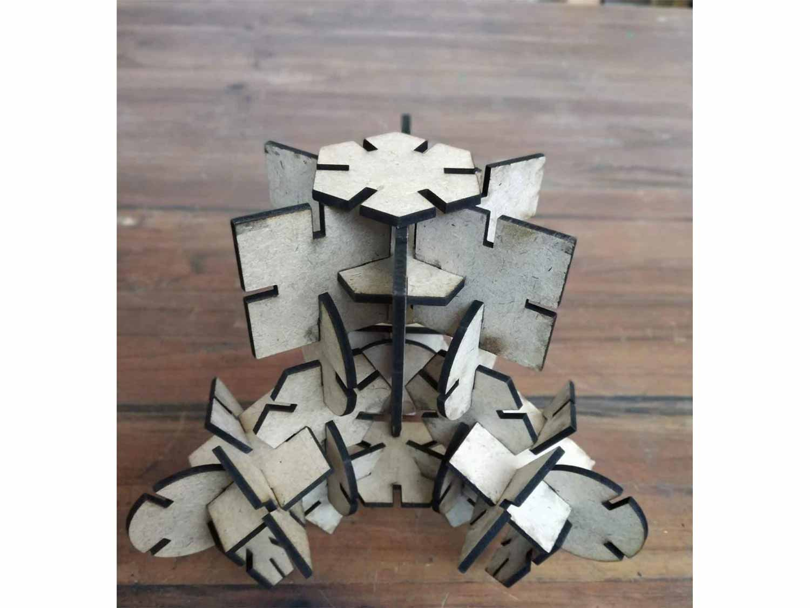
second construction
 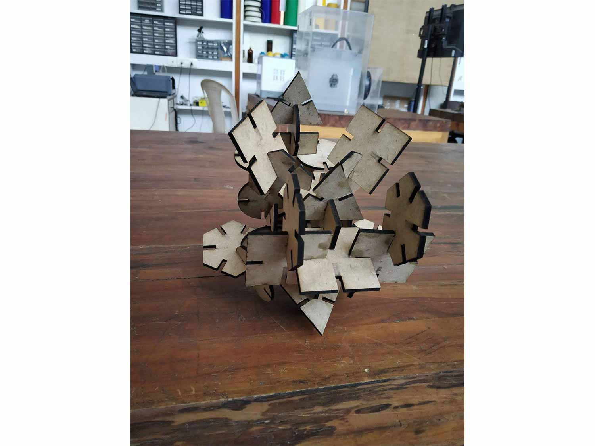
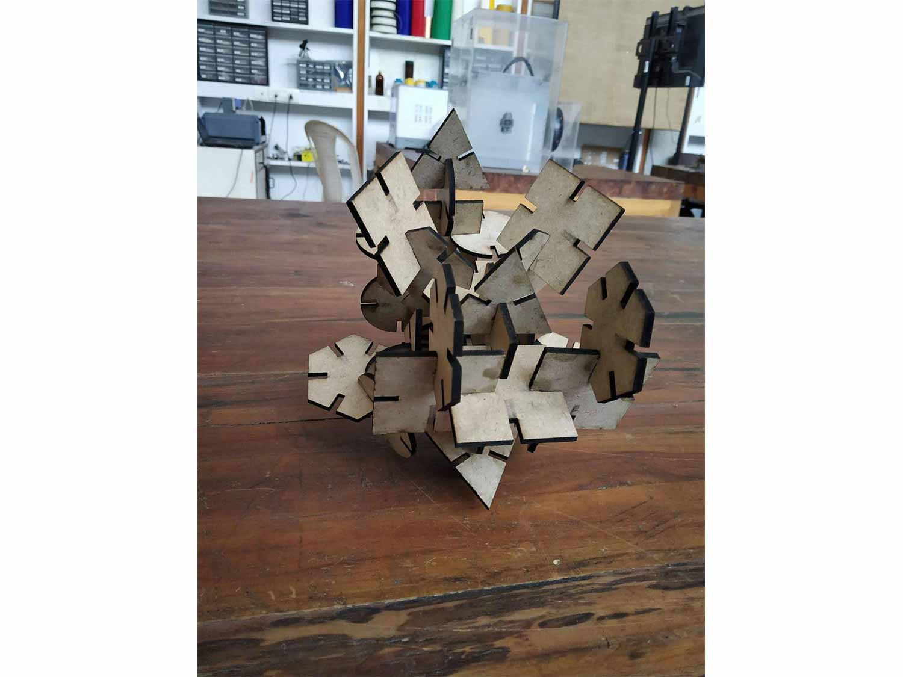
Group work
In a group work our roll was to understand the Laser cutter and to do that by trying different operations like cutting, Etching, cutting on different power and speed on the different cutting paths ( Straight or curved ). everyone choose different material to test , i choose Acrylic. it is known for its transparancy and elasticity.
Click here to redirect on group website .
Thickness of material: 1.5 mm
Power for cut : Power max: 40 %, Power min: 35 %
Power for Texts and etching: Power max: 7 % Power min: 40 %
Speed for text: 200 mm/s
Suitable for Etching: only up to 70 % power(IN SIL)
Minimum diameter can be cut: 1 mm
Kerfing: 0.07 mm
Minimum text can be cut: 1 mm
Living hinges: good material for living hinges

general conclusion about SIL :
Speed and accuracy : talking about the speed with accuracy SIL got 8/10 in Etching. because in my conclusion these two parameters are applied at a single time. it matters how laser engraves when it is on high speed , Did the laser covers the whole printed part uniformly or not ?, In SIl yes it can , it is engraving on narrow edges very precisely.
Minimum spacing between two cut profile: From my observation laser can give good results with spacing of 1.5 mm , it can go to 1.3 mm but some material like buff board it was not that good
Minimum Size of text : 3 mm preferable
Curved paths : In Arcs laser use minimum power settings because there is slow down in Speed.
COMPUTER CONTROLLED MACHINING WEEK
In computer controll Machining week i have done some work in Parametric design and Laser cutting. In Week 8 i designed Plnatery gear Box. since i never made gears i wanted to understand it first in real, so i made one protoype using the Laser cutter. The whole system is parametric so i dont have to redesign everything if something goes wrong.
Click here for week 8 page.
Conclusion
This week i finally started working with machines, i learned things which are very new to me and things i always wanted to do, to make it(my designs) work on real life. now computers are smart enought to make any type of 3d or 2d design we want but one always have to think about some constrains and try to overcome creatively if they want designs in physical environment. i think that i wanted to do so far and from these week i began.
in vinyl cutter i learn to controll the speed and force to do cut part right , for more complex design one will also have to think about its easy and better removal.
in laser cutting SIL is very good laser cutter but it also comes with some limitations, limitations i have written on the group work sections. in my design Kerfing was only limiting parameters which can effect the construction. overall week was good. :)

Smart Bin by Dhruv Prakashbhai Patel is licensed under a Creative Commons Attribution-NonCommercial-ShareAlike 4.0 International License.